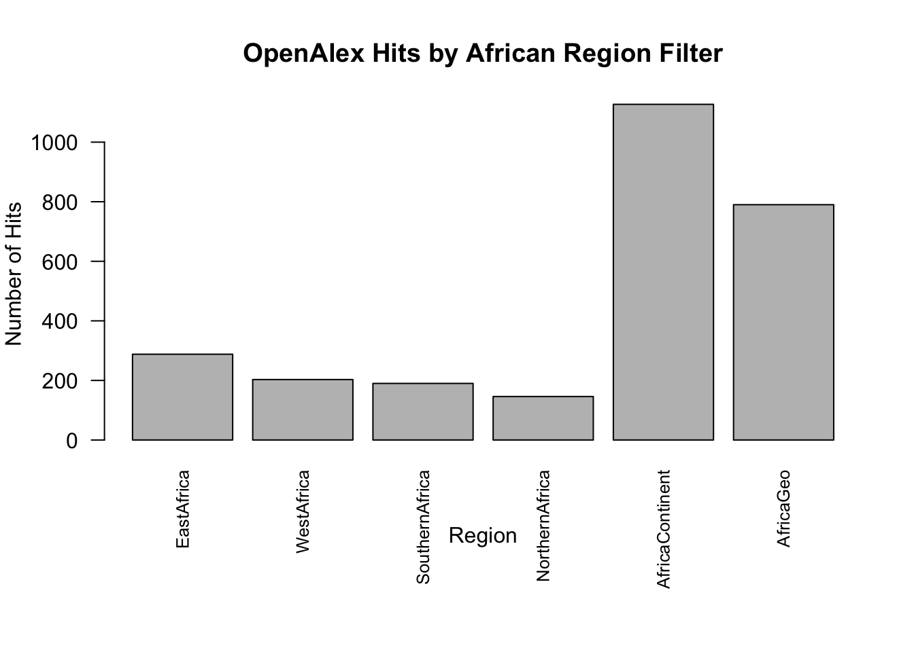
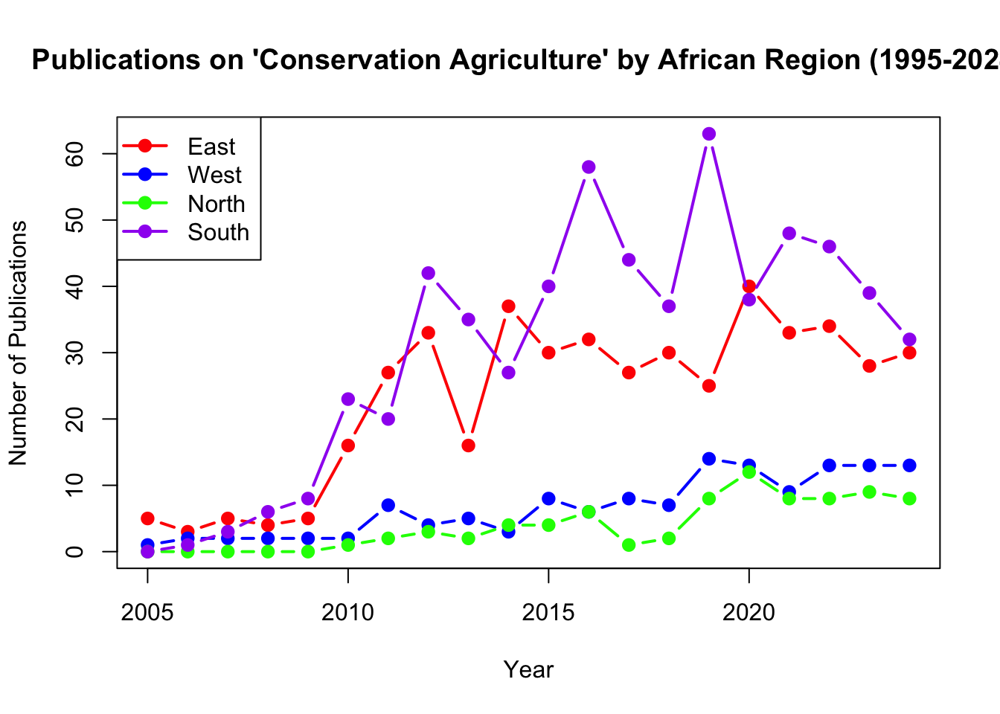

# Install and load openalexR if not already installed
if (!require(openalexR)) {
devtools::install_github("https://github.com/ropensci/openalexR")
library(openalexR)
}
# ?openalexR # Uncomment if you want to view the help page
# Install and load pacman for package management
if (!require("pacman", character.only = TRUE)) {
install.packages("pacman")
library(pacman)
}
# Load data.table (via pacman)
p_load(data.table, knitr)
# Source the era_oa_query function from GitHub (sourcing once is enough)
source("https://raw.githubusercontent.com/CIAT/ERA_dev/main/R/search/era_oa_query.R")Using era_oa_query and build_search_string with OpenAlexR
1. Setup
This section installs and loads required packages, and sources the custom functions from GitHub.
2. Constructing Queries with build_search_string
Before using the full query function, we can use the helper to see how boolean queries are built.
2.1 List of Terms vs. a Preformatted String
Here we demonstrate that you can either:
- Provide a list of terms (each block is a vector), or
- Provide a preformatted single string for that block, containing your boolean operators.
- We define a named list of search blocks. Each block represents a set of terms for a particular aspect of the search. Each list level is vector of character values that will be combined with the within_block_operators argument given to the function.
terms <- list(
practice = c("organic fertilizer", "ISFM", "conservation agriculture", "integrated soil fertility"),
geo = c("kenya", "tanzania", "malawi"),
outcome = c("yield", "profit margin", "efficiency"),
exclude = c("APSIM", "DSSAT", "WOFOS")
)
full_query_list <- build_search_string(
search_terms = terms,
within_block_operators = c("OR", "OR", "OR", "NOT"), # 'exclude' uses NOT
between_block_operators= c("AND", "AND", "AND"),
quote_terms = TRUE,
max_term = 100,
max_char_limit = 4000
)
cat("List-of-vectors query:\n", strwrap(full_query_list,width=80), "\n\n")List-of-vectors query:
("organic fertilizer" OR ISFM OR "conservation agriculture" OR "integrated soil fertility") AND (kenya OR tanzania OR malawi) AND (yield OR "profit margin" OR efficiency) AND (APSIM NOT DSSAT NOT WOFOS) - Suppose we want to provide a single preformatted string for ‘practice’ that includes OR operators, instead of a vector.
preformatted_blocks <- list(
practice = "organic fertilizer OR ISFM OR conservation agriculture OR integrated soil fertility",
geo = c("kenya", "tanzania", "malawi"),
outcome = c("yield", "profit margin", "efficiency"),
exclude = c("APSIM", "DSSAT", "WOFOS")
)
full_query_preformatted <- build_search_string(
search_terms = preformatted_blocks,
within_block_operators = c("OR", "OR", "OR", "NOT"),
between_block_operators= c("AND", "AND", "AND"),
quote_terms = TRUE,
max_term = 100,
max_char_limit = 4000
)
cat("Single-string block for 'practice':\n", strwrap(full_query_preformatted,width=80), "\n")Single-string block for 'practice':
("organic fertilizer" OR "ISFM" OR "conservation agriculture" OR "integrated soil fertility" OR NA) AND (kenya OR tanzania OR malawi) AND (yield OR "profit margin" OR efficiency) AND (APSIM NOT DSSAT NOT WOFOS) 2.2 A Simple Example and Explanation of quote_terms
quote_terms is a parameter that, when set to TRUE, makes the function place multi-word terms in quotes. For example, "organic fertilizer" becomes "(\"organic fertilizer\")", ensuring the OpenAlex API treats it as an exact phrase rather than separate words “organic” and “fertilizer.”
You can provide:
- A list of vectors (like in Section 2), where each vector is combined within a block (e.g.,
OR,AND,NOT), and blocks are combined between themselves. - A single string that already includes Boolean operators. For instance:
"organic fertilizer OR ISFM OR conservation agriculture". If you do this andquote_terms = TRUE, the function will try to parse and quote non-operator tokens. Otherwise, if the string is fully boolean and you don’t want quoting, setquote_terms = FALSE.
# Create a simple search
test_blocks <- list(
practice = c("organic fertilizer", "ISFM"),
geo = c("kenya", "tanzania")
)
test_query_T <- build_search_string(
search_terms = test_blocks,
within_block_operators = c("OR", "OR"),
between_block_operators= "AND",
quote_terms = TRUE # place multi-word terms in quotes
)
# Resulting string when quote_terms is TRUE
test_query_T[1] "(\"organic fertilizer\" OR ISFM) AND (kenya OR tanzania)"test_query_F <- build_search_string(
search_terms = test_blocks,
within_block_operators = c("OR", "OR"),
between_block_operators= "AND",
quote_terms = F # place multi-word terms in quotes
)
# Resulting string when quote_terms is FALSE
test_query_F[1] "(organic fertilizer OR ISFM) AND (kenya OR tanzania)"This is impact on the search results that are returned:
test_query_T_result <- era_oa_query(
search_terms = test_blocks,
from_date = "2010-01-01",
to_date = "2023-12-31",
download = FALSE,
within_block_operators = c("OR", "OR"),
between_block_operators= "AND",
quote_terms = TRUE,
verbose=F
)$search_hits
# Search hits quote terms:
test_query_T_result[1] 121test_query_F_result <- era_oa_query(
search_terms = test_blocks,
from_date = "2010-01-01",
to_date = "2023-12-31",
download = FALSE,
within_block_operators = c("OR", "OR"),
between_block_operators= "AND",
quote_terms = FALSE,
verbose=F
)$search_hits
# Search hits without quote terms:
test_query_F_result[1] 32583. Using era_oa_query for Programmatic Searches
We now use the era_oa_query wrapper function to query OpenAlex. To being with we set download = FALSE to return hit counts only, rather than downloading the full records. This is useful for formulating searches quickly withoutn having to download huge amounts of rich bibliographic data from the OA database.
3.1 Comparing Different Geographic Filters
Understanding the continent Argument in era_oa_query:
The continent parameter in the era_oa_query function is used to filter search results based on the geographical location of the authors’ institutions. When you set, for example, continent = "Africa", this value is passed to the OpenAlex API via the argument authorships.institutions.continent. This means that only works where at least one author is affiliated with an institution located in Africa will be returned.
In other words, using the continent argument does not search for geographic terms within the paper’s title or abstract. Instead, it leverages OpenAlex’s curated institutional metadata to filter results based on where the authors’ institutions are located. This allows you to focus on research outputs that originate from a specific region, which is particularly useful for regional analyses.
Below, we define six variants for African regions:
- EastAfrica: A set of East African countries (geo block).
- WestAfrica: West African countries.
- SouthernAfrica: Southern African countries.
- NorthernAfrica: Northern African countries.
- AfricaContinent: No
geoblock, but we passcontinent = "Africa". - AfricaGeo: A large
geoblock listing many African countries.
# Let's define some representative countries for each region:
# Northern Africa (AU)
northern_africa <- c("Algeria","Egypt","Libya","Mauritania","Morocco","Tunisia")
# West Africa (AU)
west_africa <- c("Benin","Burkina Faso","Cabo Verde","Côte d’Ivoire","The Gambia","Ghana","Guinea","Guinea-Bissau","Liberia","Mali","Niger","Nigeria","Senegal","Sierra Leone","Togo")
# East Africa (AU)
east_africa <- c("Comoros","Djibouti","Eritrea","Ethiopia","Kenya","Madagascar","Mauritius","Rwanda","Seychelles","Somalia","South Sudan","Sudan","Tanzania","Uganda")
# Southern Africa (AU)
southern_africa <- c("Botswana","Eswatini","Lesotho","Malawi","Mozambique","Namibia","South Africa","Zambia","Zimbabwe")
# For AfricaGeo, we combine them all (this is just an example subset, not exhaustive).
all_africa <- c(east_africa, west_africa, southern_africa, northern_africa)
search_variants <- list(
EastAfrica = list(
practice = c("organic fertilizer", "ISFM", "conservation agriculture"),
geo = east_africa
),
WestAfrica = list(
practice = c("organic fertilizer", "ISFM", "conservation agriculture"),
geo = west_africa
),
SouthernAfrica = list(
practice = c("organic fertilizer", "ISFM", "conservation agriculture"),
geo = southern_africa
),
NorthernAfrica = list(
practice = c("organic fertilizer", "ISFM", "conservation agriculture"),
geo = northern_africa
),
AfricaContinent = list(
practice = c("organic fertilizer", "ISFM", "conservation agriculture")
# We'll pass continent="Africa"
),
AfricaGeo = list(
practice = c("organic fertilizer", "ISFM", "conservation agriculture"),
geo = all_africa
)
)
results_list <- list()
for (nm in names(search_variants)) {
blocks <- search_variants[[nm]]
# For "AfricaContinent", pass continent = "Africa", else NULL
cont <- if (nm == "AfricaContinent") "Africa" else NULL
res <- era_oa_query(
search_terms = blocks,
from_date = "2020-01-01",
to_date = "2023-12-31",
continent = cont,
download = FALSE,
full = FALSE,
within_block_operators = rep("OR", length(blocks)), # Combine terms in each block with OR
between_block_operators= "AND",
quote_terms = TRUE,
verbose=F
)
results_list[[nm]] <- data.frame(
region = nm,
query = res$query,
hits = res$search_hits
)
}
all_res <- do.call(rbind, results_list)
par(mar = c(8, 4, 4, 2))
barplot(
all_res$hits,
names.arg = all_res$region,
main = "OpenAlex Hits by African Region Filter",
xlab = "Region",
ylab = "Number of Hits",
las = 2,
cex.names = 0.8
)
We can see the using the continent="Africa" argument results in more search hits than a geographic term of African country names.
According to the OpenAlex API, the authorships.institutions.continent filter recognizes the following continent values: 1. Africa 2. Antarctica 3. Asia 4. Europe 5. North America 6. Oceania 7. South America
These correspond to standard continent names. You won’t see them explicitly listed in one place in the official OpenAlex documentation, but these are the recognized values in the data. You can see references to them by exploring institutional records in the OpenAlex dataset or by checking examples in the OpenAlex docs under “Filter entity lists.” If you specify any other string, the API will simply not match any institutions.
3.2. Using Date Filters to Plot Yearly Publication Counts
We can loop over a set of years to get hit counts for each year and then plot the trend.
regions <- list(
East = east_africa,
West = west_africa,
North = northern_africa,
South = southern_africa
)
years <- 2005:2024
# Create a data frame to hold hit counts for each region and year
region_year_hits <- data.frame(
year = rep(years, times = length(regions)),
region = rep(names(regions), each = length(years)),
hits = NA_integer_
)
# Loop over each region and year, running era_oa_query and storing the hit count.
for (r in names(regions)) {
for (y in years) {
blocks <- list(
practice = "conservation agriculture",
geo = regions[[r]]
)
start_date <- paste0(y, "-01-01")
end_date <- paste0(y, "-12-31")
res <- era_oa_query(
search_terms = blocks,
from_date = start_date,
to_date = end_date,
download = FALSE,
full = FALSE,
within_block_operators = c("OR", "OR"),
between_block_operators= "AND",
quote_terms = TRUE,
verbose = FALSE
)
region_year_hits$hits[region_year_hits$region == r & region_year_hits$year == y] <- res$search_hits
}
}
# Plot the results with different colors for each region
colors <- c("red", "blue", "green", "purple")
plot(years, region_year_hits$hits[region_year_hits$region == "East"],
type = "b", col = colors[1], pch = 19, lwd = 2,
xlab = "Year", ylab = "Number of Publications",
main = "Publications on 'Conservation Agriculture' by African Region (1995-2024)",
ylim = range(region_year_hits$hits, na.rm = TRUE))
lines(years, region_year_hits$hits[region_year_hits$region == "West"],
type = "b", col = colors[2], pch = 19, lwd = 2)
lines(years, region_year_hits$hits[region_year_hits$region == "North"],
type = "b", col = colors[3], pch = 19, lwd = 2)
lines(years, region_year_hits$hits[region_year_hits$region == "South"],
type = "b", col = colors[4], pch = 19, lwd = 2)
legend("topleft", legend = names(regions), col = colors, lwd = 2, pch = 19)
4. Downloading Records
Here we show how you can use the era_oa_query function to download minimal fields (faster with only doi and title fields) vs. full fields (slower with all bibliographic fields).
my_blocks <- list(
practice = c("organic fertilizer"),
geo = c("kenya"),
outcome = c("yield", "profit margin")
)
# Download minimal fields (title, doi)
res_min <- era_oa_query(
search_terms = my_blocks,
from_date = "2020-01-01",
to_date = "2023-12-31",
download = TRUE,
full = FALSE,
quote_terms = TRUE
)Token count = 4
Search hits = 6
Downloading query results...kable(head(res_min$results,5),caption="Title and doi only downloaded")| title | doi |
|---|---|
| The influence of organic and inorganic nutrient inputs on soil organic carbon functional groups content and maize yields | https://doi.org/10.1016/j.heliyon.2021.e07881 |
| Effects of a One-Time Organic Fertilizer Application on Long-Term Crop and Residue Yields, and Soil Quality Measurements Using Biointensive Agriculture | https://doi.org/10.3389/fsufs.2020.00067 |
| Efficacy Evaluation of Organic Fertilizers on Growth, Yield and Quality Parameters of French Beans, Maize and Kale in Different Counties of Kenya | https://doi.org/10.9734/ijpss/2023/v35i132987 |
| Assessment of Factors that Limit Optimal Use of Organic Fertilizers in Subsistence Food Production in Vihiga County, Kenya | https://doi.org/10.9734/ijecc/2021/v11i1130545 |
| Effect of Cropping System and Nitrogen on Maize and Soy Bean Yields in Western Kenya | https://doi.org/10.5539/sar.v9n3p39 |
# Download full fields (including abstracts)
res_full <- era_oa_query(
search_terms = my_blocks,
from_date = "2020-01-01",
to_date = "2023-12-31",
download = TRUE,
full = TRUE,
quote_terms = TRUE
)Token count = 4
Search hits = 6
Downloading query results...kable(head(res_full$results,1),caption="Complete record downloaded")| id | display_name | ab | doi | url | relevance_score | is_oa | language | type | publication_date | authors |
|---|---|---|---|---|---|---|---|---|---|---|
| https://openalex.org/W3197607097 | The influence of organic and inorganic nutrient inputs on soil organic carbon functional groups content and maize yields | Locally available organic inputs to soil, solely or in combination with inorganic fertilizers, are used to reverse declining soil fertility and improve soil organic matter content (SOM) in smallholder farms of most Sub-Saharan Africa (SSA) countries. Soil organic matter characterization can indicate soil organic input, carbon (C) sequestration potential, or even an authentication tool for soil C dynamics in C stocks accounting. This study determined the effects of the long-term application of selected integrated soil fertility management (ISFM) technologies on SOM functional group composition and maize yields. The study was carried out on an ongoing long-term soil fertility field experiment established in 2004 in Mbeere South sub-county, the drier part of upper Eastern Kenya. The experimental design was a randomized complete block design. The ISFM treatments were 60 kg ha−1 nitrogen (N) from goat manure (GM60); 30 kg ha−1 inorganic N fertilizer (IF30); 60 kg ha−1 inorganic N fertilizer (IF60); GM30+IF30; 90 kg ha−1 inorganic N fertilizer (IF90); 60 kg ha−1 N from lantana (Lantana camara) (LC60); LC30+IF30; 60 kg ha−1 N from mucuna beans (Mucuna pruriens) (MP60); MP30+IF30; 60 kg ha−1 N from Mexican sunflower (Tithonia diversifolia) (TD60); TD30+IF30, and a control with no inputs. The C compositions of ground soil samples and organic amendments were analyzed using 13C solid-state NMR. The GM60, GM30+IF30, LC60, and TD60 treatments had much higher Alkyl and O-Alkyl C SOM functional groups than the control and other treatments. The average soil C for the control was 7.47 mg kg−1 and ranged from 5.03 to 7.37, 9.57 to 18.77, and 7.03–14.50 mg kg−1 for inorganic fertilizers, organic fertilizers, and organic + inorganic fertilizers, respectively. The mean grain yield for the control was 0.56 Mg ha−1 and ranged from 1.51 to 1.99, 1.94 to 4.16, and 2.98–4.60 Mg ha−1 for inorganic fertilizers, organic fertilizers, and organic + inorganic fertilizers, respectively. The results showed that a long-term application of sole organic fertilizers or combined with inorganic fertilizers increases maize yield and soil C sequestration potential. The increase was attributed to high Alkyl and O-Alkyl C SOM functional groups. Hence, knowing the C fraction content of organic inputs is vital in determining the best-fit management technologies for ameliorating soil fertility and sustaining and/or improving crop yields. | https://doi.org/10.1016/j.heliyon.2021.e07881 | https://doi.org/10.1016/j.heliyon.2021.e07881 | 14.03345 | TRUE | en | article | 2021-08-01 | Macharia Mohamed Ndung’u;Lucy W. Ngatia;Richard N. Onwonga;Monicah Mucheru‐Muna;Riqiang Fu;Daniel N. Moriasi;Felix K. Ngetich |
# The search details are also returned
kable(res_min$meta_data)| query | api_endpoint | search_hits | date_search_ran |
|---|---|---|---|
| (“organic fertilizer”) AND (kenya) AND (yield OR “profit margin”) | https://api.openalex.org/works?filter=title_and_abstract.search%3A%28%22organic%20fertilizer%22%29%20AND%20%28kenya%29%20AND%20%28yield%20OR%20%22profit%20margin%22%29%2Cfrom_publication_date%3A2020-01-01%2Cto_publication_date%3A2023-12-31&select=title,doi | 6 | 2025-02-18 |
5. Understanding max_char_limit and max_term
max_char_limit:
This parameter limits the maximum number of characters allowed in the final API URL. If your query is too large, you may exceed URL length limits. The function stops if the endpoint URL is longer than this value.max_term:
This parameter is used bybuild_search_string(which employs advanced token splitting) to warn if the query is too big. Large queries can cause performance issues or exceed the API constraints.
These parameters help manage limitations of the OpenAlex API, ensuring your queries remain within acceptable bounds.
# Create a dummy search list with a large search string that is too long
dummy_terms_long <- list(
dummy = rep("extremely long winded search term that yields a search string that is waaaaaaaaaaaay too long", 99)
)
dummy_result_long <- tryCatch(
era_oa_query(
search_terms = dummy_terms_long,
from_date = "2020-01-01",
to_date = "2023-12-31",
download = FALSE,
full = FALSE,
quote_terms = TRUE,
max_term = 100,
max_char_limit = 4000
),
error = function(e) e
)Token count = 99 dummy_result_long$message[1] "Encoded search string has 13518 characters, which exceeds the maximum allowed (4000)."# Create a dummy search list with a large search string that has too many terms
dummy_terms_many <- list(
dummy = rep("a", 300) # 300 terms in one block
)
dummy_result_many <- tryCatch(
era_oa_query(
search_terms = dummy_terms_many,
from_date = "2020-01-01",
to_date = "2023-12-31",
download = FALSE,
full = FALSE,
quote_terms = TRUE,
max_term = 100,
max_char_limit = 4000
),
error = function(e) e
)Token count = 300 dummy_result_many$message[1] "Number of terms (300) exceeds the maximum allowed (100)."Summary
build_search_string:
Allows you to flexibly build boolean queries from lists of blocks, specifying within‐ and between‐block operators, and optionally quoting multi‐word terms. You can also pass a single string containing Boolean logic.era_oa_query:
Wraps the query construction and uses OpenAlexR to retrieve results. It supports date filters, continent filters, minimal/full downloads, and checks on query length.
You can experiment with different filters, date ranges, and download options to tailor your search to your needs.